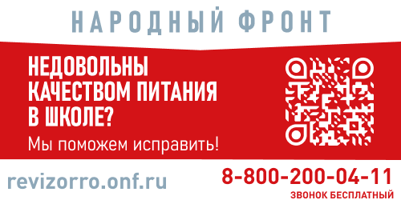
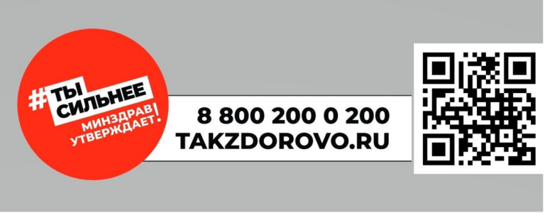

Школьное питание
Уважаемые ученики и родители, на этой странице вы можете ознакомиться с информацией об организации питания в нашей школе.
 
Федеральный центр мониторинга питания проводит опрос для обучающихся и родителей начальных классов по вопросам качества школьного питания. Ссылка для прохождения опроса: https://фцмпо.рф/опрос/
Анкетирование родителей обучающихся 1 — 4 классов об удовлетворенности качеством питания
Воспитаем здоровое поколение вместе!
Перспективное меню в фотографиях
Перспективное меню для детей, посещающих лагерь в период летних каникул 7-10 лет
Перспективное меню для детей, посещающих лагерь в период летних каникул с 11 лет
Школьное питание в вопросах и ответах
Бесплатное горячее питание для учащихся младших классов разъяснения с портала Госуслуги
Сведения об организаторе питания
Перечень юридических и индивидуальных предпринимателей, поставляющих продукты питания
Дети с ограниченными возможностями здоровья
Единственный родитель, воспитывающий двоих и более несовершеннолетних детей
Приказ о создании бракеражной комиссии
Приказ об организации выдачи молока
Приказ о создании комиссии общественного контроля
Приказ о дистанционном обучении с 21 по 24 декабря 2022 года.
Положение об организации питания
Порядок обеспечения горячим питанием
Меню для детей, посещающих лагерь в период летних каникул
По вопросам организации питания можно воспользоваться ОБРАТНОЙ СВЯЗЬЮ
Ответственный за организацию питания — Князева Елена Александровна . Тел. 32-10-22
Горячая линия департамента образования администрации г. Южно-Сахалинска
31-26-88 доб.1
Горячая линия Министерства образования Сахалинской области 8(4242) 46-59-36
Горячая линия Министерства просвещения Российской Федерации +7(800) 200-91-85
Горячая линия ОНФ 8(800) 200-34-11